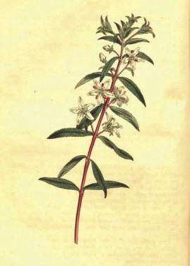
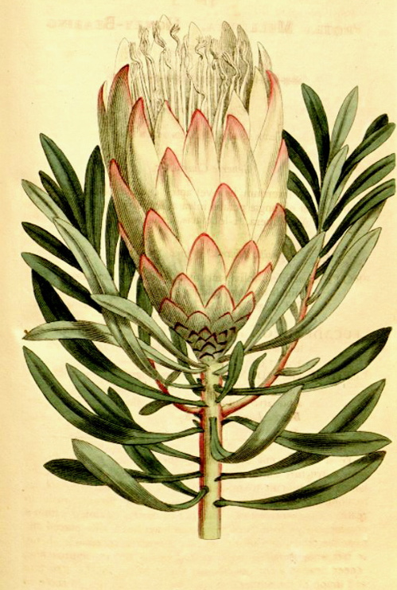

Travel writers had to balance the captivation of their audience with the scientific purposes of their journeys. Most were botanists who had been generously sponsored by governments and elite societies; their mission was to catalogue new and potentially useful plants. They made detailed drawings of new specimens and dubbed them with new latin names according to the Linnaean system.

Travel writers had much to say about the people they encountered in Southern Africa, and the way that these people used native plants. But their drawings of plants, though beautiful, are divorced from any larger context. Traveling botanists relied heavily on native guides in their field work, and yet existing names for plants were eschewed for new latin ones. This is indicative of their desire to classify knowledge about plants within a hegemonic system.
